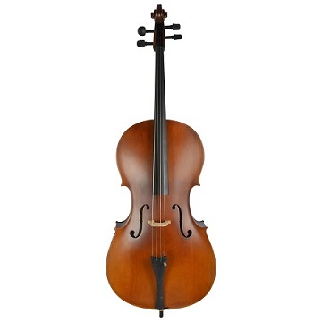

Home Guitar Lute Cello Piano Training

The violoncello, usually abbreviated to cello, is a bowed stringed instrument. A member of the violin family, tuned an octave below the viola. The cello is used as a solo instrument, in chamber music, and as a member of the string section of an orchestra.
Played by a cellist or violoncellist, it enjoys a large solo repertoire with and without accompaniment, as well as numerous concerti. As a solo instrument, the cello uses its whole range, from bass to soprano, and in chamber music such as string quartets and the orchestra's string section, it often plays the bass part, where it may be reinforced an octave lower by the double basses.
Figured bass music of the Baroque-era typically assumes a cello, viola da gamba or bassoon as part of the basso continuo group alongside chordal instruments such as organ, harpsichord, lute or theorbo. Cellos are found in many other ensembles, from modern Chinese orchestras to cello rock bands.